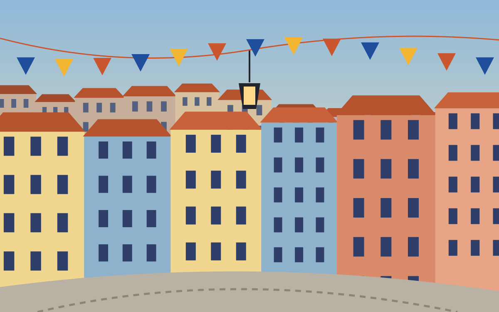
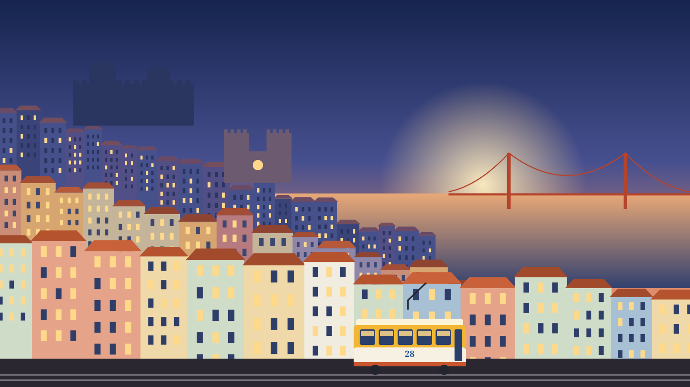
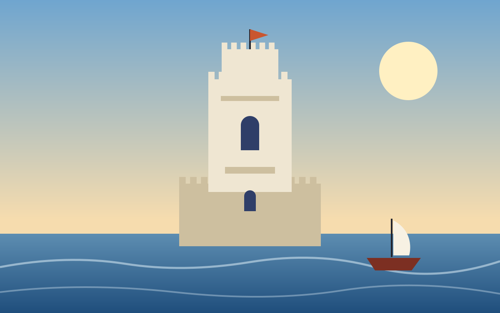

ExemploAlfama e Mouraria
Ruas estreitas, miradouros e histórias de dois dos bairros mais antigos de Lisboa.
Preço a confirmar com o NelsonPedir pelo WhatsApp

Celina Tours · Lisboa
Escolha o passeio, indique o dia e o Nelson Baptista confirma a reserva consigo.
Dois passeios de exemplo, para mostrar como fica esta página.

ExemploRuas estreitas, miradouros e histórias de dois dos bairros mais antigos de Lisboa.
Preço a confirmar com o NelsonPedir pelo WhatsApp

ExemploOs monumentos de Belém e um passeio a pé junto ao rio.
Preço a confirmar com o NelsonPedir pelo WhatsApp
23h
Uma turista escreve no WhatsApp da Celina Tours. O assistente responde na língua dela e deixa tudo pronto.
Hi! Do you do tours in Lisbon? We're 2 people and we'd love to go this Saturday.
Hi, and welcome to Celina Tours! 👋 I'm the virtual assistant, and I can get your request ready tonight.
Here are two options for 2 people:
The first one sounds lovely!
Great choice! So that's Saturday 14 November, right? Would you prefer the morning or the afternoon?
Yes, that's the one. Morning, please.
Perfect. What name should I put on the booking?
Emily, thanks!
Thank you, Emily! Your booking is ready for Nelson Baptista:
Alfama & Mouraria
Saturday 14 November, morning
2 people
🕓 Waiting for Nelson's confirmation
He'll confirm it with you here, along with the exact time and the price.
ExemploPedido recebido às 23:07
Do primeiro contacto à reserva, sem perder mensagens durante a noite.
A qualquer hora, pelo WhatsApp da Celina Tours.
Sugere passeios, recolhe a data, o número de pessoas e o nome.
Vê o pedido pronto, indica a hora e o preço e confirma com o cliente.
O seu contacto na Celina Tours para passeios em Lisboa.